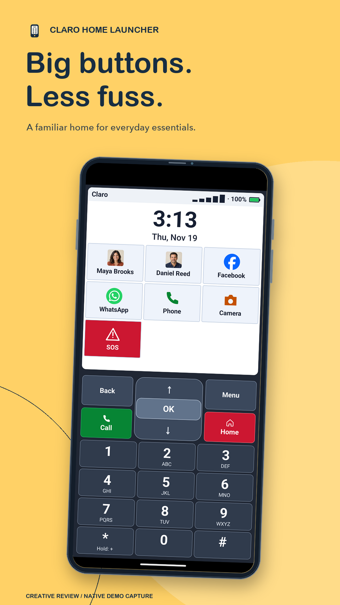
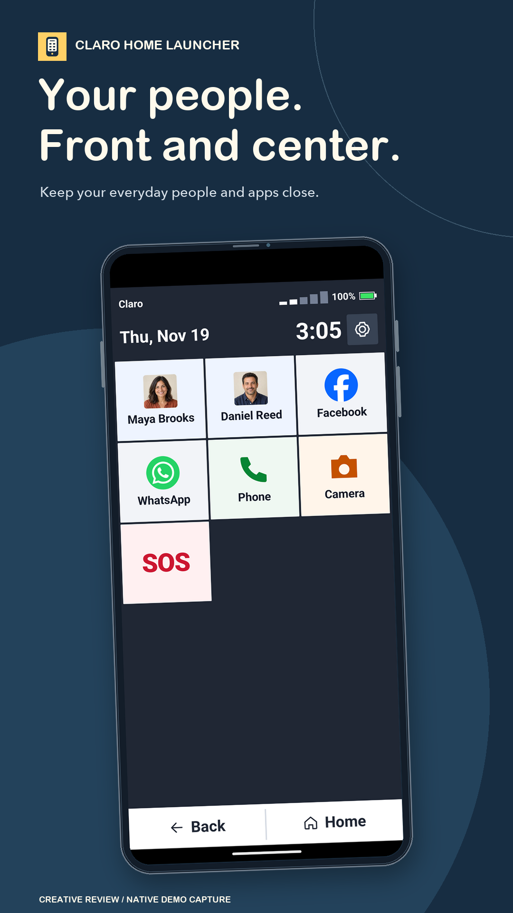
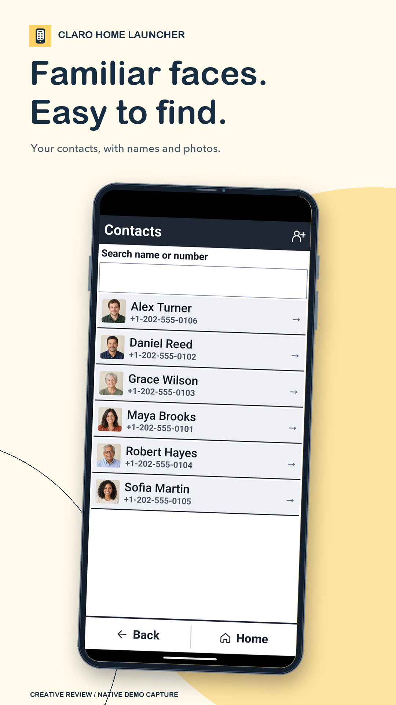
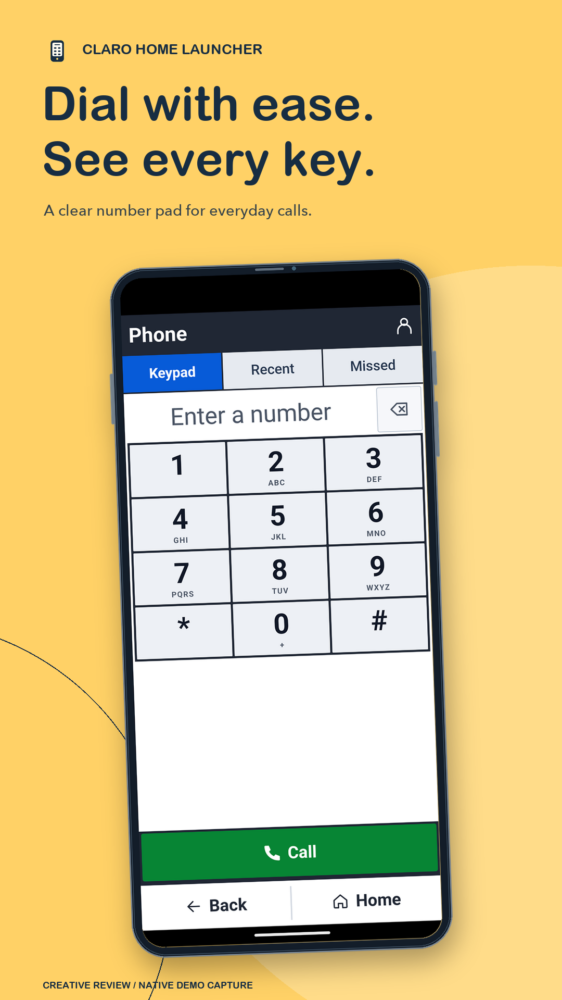
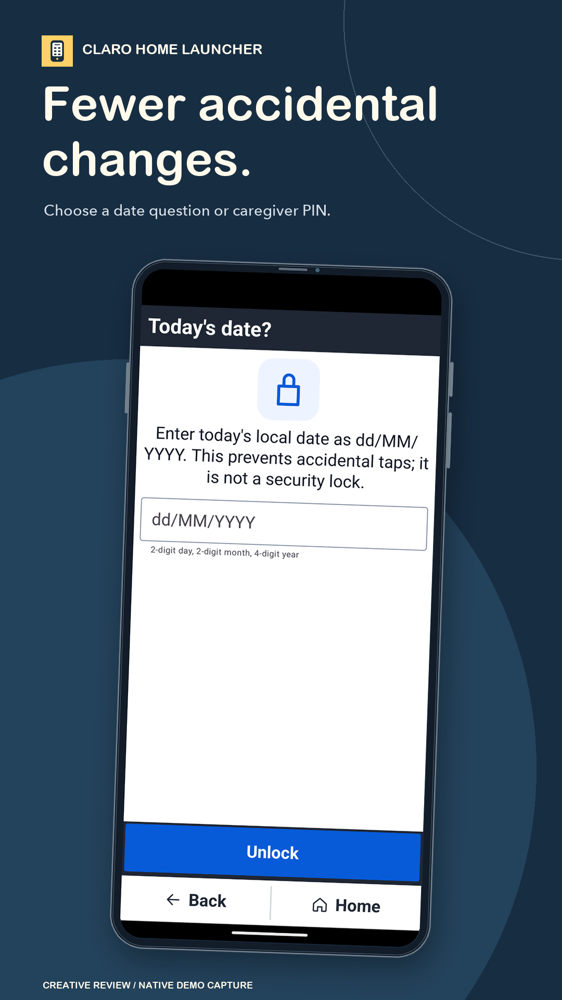

A coordinated screenshot system: warm gold, confident navy, generous typography and a clean, original phone mockup.
Fresh native captures for creative review. These are real emulator screens with six fictional contacts and AI-generated portraits. Facebook and WhatsApp show their genuine installed-app icons. The app's style-selection images have also been refreshed from these captures. Final creative approval and signed-release verification are required before publication.




